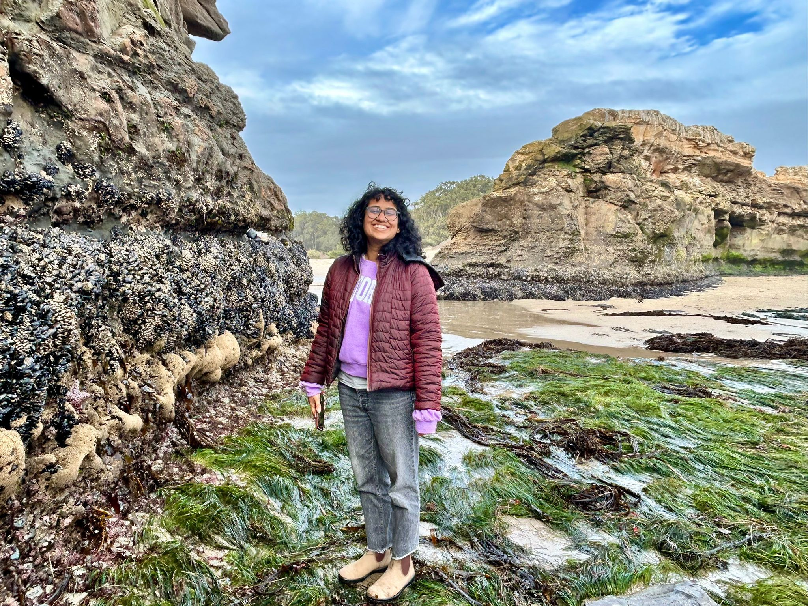

I am an ETH Zurich Postdoctoral Fellow in the International Relations and Data Science Lab. I received my PhD in Political Science from the University of California, Berkeley, and hold an MPA/ID from the Harvard Kennedy School. I am also a Research Associate at the Center on the Politics of Development.
I am a political scientist and data scientist studying how social hierarchies—especially gender, race, and immigration status—shape how individuals engage institutions under conditions of inequality and violence. My research spans the United States and India, with projects on immigration, racial attitudes, and gender-based violence. I focus in particular on administrative and archival data, building person-level datasets from complex institutional records to understand how policies translate into lived outcomes.
Methodologically, I combine fieldwork with surveys, experiments, and LLMs. I use primary survey and archival data as well as large-scale administrative data.
Do Virtual Museums Highlighting the Experiences of Minorities Persuade Visitors? Evidence From a Study on Bias Toward Asian Americans
(SSRN.)
With Charles Crabtree,
John B. Holbein,
and Cecilia Mo
Under Review
Forever Foreign? Differential Linguistic Assimilation Standards for Asian Immigrants
With Charles Crabtree,
John B. Holbein,
and Cecilia Mo
Missing and Miscoded Women: A Note on Measuring Domestic Violence Claims
How She Leaves: Separation and Domestic Violence in India
Commonality or Difference? Sexual Assault and the Foundations of Women's Solidarities in the United States
Seeing Like a Computer: The Ethics and Methods of Using LLMs in GBV Research
With Aarthi Muthukumar and Paulina Garcia Corral
Book Review: Performing Representation: Women Members in the Indian Parliament by Shirin M. Rai and Carole Spary and Women, Power, and Property: The Paradox of Gender Equality Laws in India by Rachel E. Brulé
India Seminar Magazine Issue 752, She Rules!, April 2022.
Women's Economic Empowerment in Pakistan: An Evidence Guided Toolkit for More Inclusive Policies
With Sofia Amaral, Pulkit Aggarwal, Anusha Guha, Osama Safeer, and Shirleen Manzur.
South Asia Gender Innovation Lab (SARGIL), World Bank. 2024.
Seeing Like the State or Seeing the State? The Political Economy of Women's Self-Help Groups in Madhya Pradesh
With Arundhita Bhanjdeo,
Nivedita Narain,
and Michael Walton
South Asian Politics (Undergraduate-level), Graduate Student Instructor for Pradeep Chhibber
Quantitative Analysis in Political Research (PhD-level), Graduate Student Instructor for Thad Dunning
Gender and International Human Rights (Undergraduate-level), Graduate Student Instructor for Helene Silverberg
The Varieties of Capitalism: The Political-Economic Systems of the World (Undergraduate-level), Graduate Student Instructor for Steven Vogel